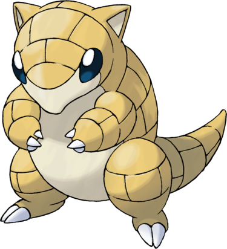

Sabelette est un Pokémon ressemblant à un pangolin au corps cuirassé jaune. Son ventre est complètement beige pâle en plus de son menton. Il possède des yeux noir et bleu et deux petites oreilles. Ce bipède est muni de trois griffes aux bras et de deux aux jambes. Sabelette vit en horde.